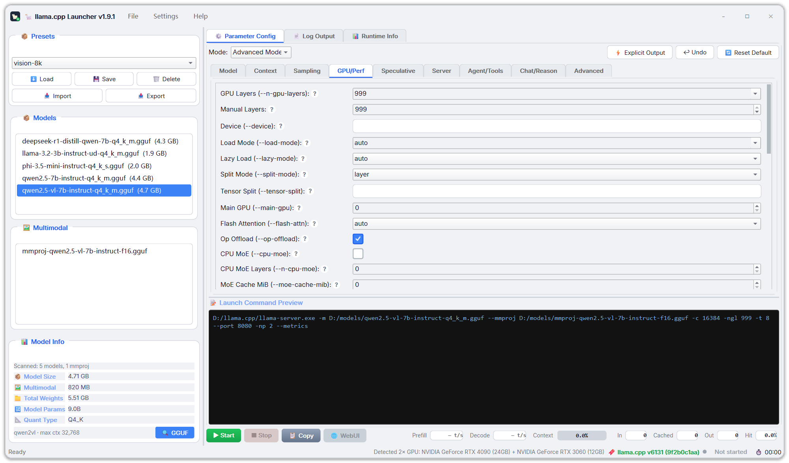
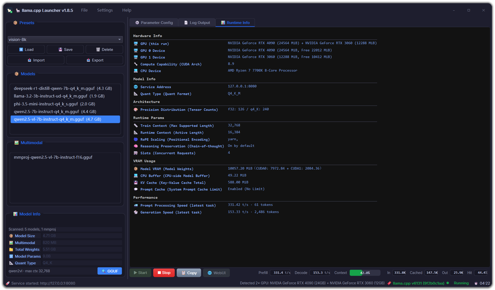

01 · Getting started
Overview
A full-featured llama-server (llama.cpp) GUI launcher. It drives the llama-server binary *you* installed — everything it does is visible, everything is under your control.
A different route: bring your own llama-server
Most GUI tools (Ollama, LM Studio, …) bundle a fixed llama.cpp version and hide the command line. Llama CPP Launcher is the opposite: it drives the llama-server binary *you* installed.
| Capability | Llama CPP Launcher | Bundled-backend tools |
|---|---|---|
| Upgrade llama.cpp | Swap the binary, done | Wait for an app update |
| Custom builds (CUDA / ROCm / Vulkan / Metal / SYCL) | Use any build | Stuck with the bundled one |
| Bleeding-edge commits | Build today, run today | Weeks or months of waiting |
| Rollback | Put the old binary back | Hope they ship it |
| The exact command the app runs | Always visible, one-click copy | Opaque |
Automatically in sync with your binary
- Live default detection
- Runs
llama-server --helpon startup and parses the *real* defaults of your binary version. No stale hardcoded values; drift is surfaced via a ⚠ indicator. - Chat template auto-discovery
- Templates shipped by your binary appear in the UI automatically.
- GPU detection
- Probes
--list-devicesand shows e.g. “Detected 2× GPU: RTX 5090 (32GB) + RTX 2080 (8GB)” in the status bar, left of the version. Display only, never auto-filled — always your call.
Lightweight & private
~16,000 lines of Python with a single runtime dependency, PyQt6. No bundled backend, no accounts, no telemetry, no phone home — 100% local.
Get it
- Windows: download
LlamaCppLauncher.exefrom GitHub Releases and double-click to run — no Python install needed. - From source: any OS (Python 3.11+), steps in Quick Start.
- License: MIT — do whatever you want with it.
02 · Getting started
Quick Start
Two routes: the Windows exe needs zero environment setup; from source works on any OS.
Option 1 · Windows exe (recommended)
- Download
LlamaCppLauncher.exefrom Releases and double-click to run — no Python needed. - Install
llama-server(e.g. the prebuilt release from ggml-org/llama.cpp releases). - In the app: File → Set llama-server path… and point it at the binary; or just add it to
PATH— the launcher finds it automatically. - Pick a model, hit Start, open the WebUI. Done.
Windows SmartScreen may warn about the unsigned executable — click More info → Run anyway.
Option 2 · From source (any OS)
git clone https://github.com/Mars-Albert/llama-cpp-launcher.git cd llama-cpp-launcher python -m venv venv venv\Scripts\activate # Windows source venv/bin/activate # Linux / macOS pip install -r requirements.txt python main.py # or double-click run.bat on Windows
requirements.txt pins PyQt6 to 6.11.0 — the app is tested against exactly this runtime.
After the first run
Pick a model and hit Start: a color-coded status indicator and runtime counter (MM:SS) appear; the Runtime Info panel starts filling live from the server logs; the command preview shows the exact command passed to llama-server. See Server Lifecycle.
03 · Interface & modes
Window & UI
A frameless rounded-card window with one integrated title row — every dialog belongs to the same visual family.


Frameless rounded-card window
The app paints its own card with a soft drop shadow: one integrated title row (icon · title · menu · Win11-style minimize / maximize / close); drag to move, double-click to maximize, edge-resize right at the visible card edge. Maximized, the card goes full-bleed with the system’s own rounded corners.
Right column · 3 tabs + a permanent control row
The whole right column is one tab widget — ⚙ Parameter config · 📄 Log output · 📊 Runtime info — so each view owns the full column height (about 800px of log on a 1080p window instead of the old 200px sliver). Below the tabs sits the control row: ▶ Start · ■ Stop · 📋 Copy · 🌐 WebUI on the left, the live metrics row on the right. It lives outside the tabs, so it works whichever tab is open. Inside the parameter tab there is also a draggable splitter between the parameter area and the command preview.
| Tab | Contents | Notes |
|---|---|---|
| ⚙ Parameter config | Basic / Advanced mode bar, parameter blocks, command preview | Top / bottom halves are draggable |
| 📄 Log output | Search, level filter, export — the full column height | Ctrl+F jumps to this tab |
| 📊 Runtime info | The table parsed out of the server log (see Real-time log parsing) | — |
The active tab, mode, window size and every splitter position are remembered and restored on the next start.
Status bar
Left: the current message (preset loaded, errors, …). Right, in order:
| Item | What it shows |
|---|---|
| Detected GPU(s) | e.g. “Detected 2× GPU: RTX 5090 (32GB) + RTX TITAN (24GB)”, from --list-devices; hover for per-card total / free VRAM, hidden until the probe finishes |
| Version | Your binary’s --version; turns amber when it is newer than the built-in parameter table |
| ⚠ Parameter drift | Only appears when the parsed defaults really differ from the schema; click for the full, untruncated list |
| State dot + text | Gray idle · amber starting, or running while both /slots and /metrics stay silent · green running · red error |
| Runtime | MM:SS, ticking every second |
Unified dialogs & message boxes
Every dialog, confirm and error box belongs to the same frameless card family, dark / light aware — consistent style, nothing pops out of the look.
Default size & state memory
First launch opens at 1600 × 940 (clamped to the screen’s work area) with a 400px model column. Size and position, basic / advanced mode, the active right-column tab, the advanced sub-tab, the main splitter width and the parameter / preview split are all restored on next start.
Small windows behave
The parameter area never gets a vertical scrollbar and no control is squashed or overlapped: quick toggles re-wrap into more rows and the window’s minimum size grows accordingly; very narrow windows scroll the wide rows sideways.
Menu
| Menu | Contents |
|---|---|
| File | Scan path, set llama-server path, refresh, exit |
| Settings | Customize quick toggles, language (Chinese / English), theme (dark / light) |
| Help | About |
04 · Interface & modes
Two Modes
Basic mode gets a model running in seconds; Advanced mode fine-tunes every detail.
Side by side
| Basic Mode | Advanced Mode |
|---|---|
| Model & mmproj pickers (backed by the model browser) | All CLI parameters configurable in the UI, grouped into 9 tabs |
| Sliders for temp / top-p / min-p / repeat penalty, top-k spin | LoRA adapters & scales, control vectors, image token limits |
| Context quick-picks: Default → 4K → 262K | Model sources: local file, HF repo, URL, Docker repo |
| GPU layers auto / all / manual, host / port / parallel | Speculative decoding (draft-mtp, ngram, lookup cache) |
| Quick toggles (user-configurable, Settings → Customize): FlashAttn, reasoning, split mode, spec type, draft max… | Full server config: SSL, CORS, slots, embedding / rerank, MCP |
| Basic: get a model running in seconds · Advanced: fine-tune every detail | |
User-configurable quick toggles
Basic mode’s quick toggles are not fixed: in Settings → Customize quick toggles… you pick from the pool (FlashAttn, reasoning, split mode, spec type, draft max tokens, …) and assemble your own set.
05 · Interface & modes
Basic Mode
Five control groups — a few clicks to a running local inference server.
Model & multimodal
The model & mmproj pickers are backed by the model browser: auto-categorization, instant model info, name-based mmproj auto-matching — see Model Browser.
Sampling parameters
Temperature, top-p, min-p and repeat penalty as sliders; top-k as a spinbox — tune the sampling behavior you want without memorizing CLI flags.
Context quick-picks
Default → 4K → 262K in one click. When your context setting exceeds the model’s limit, the model-info row turns amber as a warning — the server would clamp it at load.
GPU & server
GPU layers tri-state: auto / all / manual; host, port and parallel set in place. The --list-devices detection is shown next to the layer control (display only, never auto-filled).
Quick toggles
The switches you reach for, one screen: FlashAttn, reasoning, split mode, spec type, draft max tokens… The set is user-configurable — see Two Modes.
06 · Interface & modes
Advanced Mode · 9 Tabs
All CLI parameters are configurable in the UI (the parameter list moves with llama.cpp itself), grouped into 9 tabs by concern. Every parameter row has a “?” help button.
The 9 tabs
| Tab | What’s inside |
|---|---|
| Model | Model file, alias, tags, HF / URL / Docker sources, LoRA, control vectors, mmproj (vision) |
| Context | Context size, prompt & KV cache, RoPE / YaRN scaling |
| Sampling | Temperature, top-k / p, min-p, penalties, grammar & repetition |
| GPU / Performance | Offload, memory, CPU threads, affinity, priority |
| Speculative | Draft models (draft-mtp), ngram, lookup cache, draft tokens |
| Server | Host / port, slots, parallel, endpoints, SSL, CORS, embedding / rerank, router |
| Agent / Tools | Tool calling, MCP server, agent settings |
| Chat / Reasoning | Chat templates, reasoning mode, thinking budget |
| Advanced | Text I/O, logging, extra_args escape hatch |
The schema is the single source of truth
UI, CLI command emission, get / set values and i18n coverage all share one schema (core/params_schema.py) — adding a parameter is a single entry, no manual sync across three places.
07 · Models & server
Model Browser
A background thread scans your local GGUF library — the UI never freezes.
Scanning & categorization
A background thread scans the model directory. .gguf files are auto-categorized as Models / Multimodal (mmproj) with file sizes.
Instant model info
Instant info for the selected model: file size, estimated parameter count, quantization type.
GGUF quick-metadata row
Architecture + max context of the selected model, parsed from the file *header only* (a few MB, cached, off the GUI thread). When your context setting exceeds the model’s limit, the row turns amber — the server would clamp it at load.
Matching & memory
- Auto-matches the mmproj to your model by name;
- the scan directory is remembered across sessions;
- F5 to re-scan.
08 · Models & server
Server Lifecycle
From start to stop, the status is always visible.
Start & stop
The four buttons in the control row wear a colored fill with white text (deliberately unlike the app’s ordinary buttons — this is the primary action area): ▶ Start · ■ Stop · 📋 Copy · 🌐 WebUI; a port-conflict check runs before launch; the llama-server WebUI opens in your browser with one click. Run state and the runtime counter live in the status bar (gray / amber / green / red + MM:SS).
Live metrics row
The right end of the control row carries a single-line metrics strip, visible on all three tabs. It reads the server’s own endpoints — no extra processes, and nothing guessed from the log:
| Group | Read-outs | Source · cadence |
|---|---|---|
| Live | Prefill t/s · Decode t/s · context gauge + percentage | GET /slots · 1 s |
| Session | Input tokens · cached · output tokens · cache hit rate | GET /metrics · 5 s |
- Context gauge
- The percentage is painted inside the gauge: amber from 70%, red from 90% — so how much window is left is obvious at a glance.
- Re-baselined speeds
- Counter deltas are computed locally and re-baselined at every task boundary — the server clears its counters per task, so starting a new request can never produce a negative t/s.
- Enabling the session counters
- They need the server’s metrics endpoint: Advanced Mode → Server → “Prometheus Metrics (--metrics)”, then restart the server. Before the first sample they read 0 (session totals do start at zero); a value that genuinely cannot be read shows
—. Each read-out’s tooltip says which case you are looking at. - Stable layout
- The strip never collapses while idle and every read-out is as wide as its widest possible value, so neither the 1 s refresh nor pressing Start reflows the row.
Graceful stop
Stopping is non-blocking with a force-kill fallback; the service stops automatically when you close the app.
Undo
800ms-debounced snapshots, up to 20 steps back — wrong parameter edit? Undo it.
Command preview
The exact llama-server command, updated on every change, one-click copy; paths with spaces are quoted correctly.
llama-server -m "D:/models/Qwen2.5-14B-Instruct-Q4_K_M.gguf" \
--ctx-size 32768 --n-gpu-layers 99 --flash-attn \
--host 127.0.0.1 --port 8080
09 · Models & server
Presets
Save one name, and your whole parameter set is restored automatically on next start.
Save & share
- Save / load / delete named presets — only the diff vs. defaults is stored, so files stay small and portable.
- Import / export as JSON files for sharing; created time shown in the list.
- When saving, choose to include or exclude machine-local paths (model / mmproj) — share across machines without surprises.
Auto-restore & migration
- The preset you last loaded is restored automatically on next start.
- Parameter keys renamed or removed across llama.cpp versions are migrated automatically on load.
10 · Logs & diagnostics
Live Log Parsing
Every line of llama-server output is parsed as it arrives and distilled into the Runtime Info panel.
The parser carries 74 rules covering both the old and the v9174+ srv-prefixed log formats; the panel spans 8 categories and 40+ data points.
8 categories of data
| Category | What you see |
|---|---|
| Hardware | GPU name / compute capability / total & free VRAM per GPU, CPU |
| Model | File, model name, quant type, GGUF version |
| Architecture | Params, layers, embed / FFN dims, vocab, tensor precision split |
| Runtime | Train vs runtime ctx, batch / ubatch, slots, RoPE freq, thinking mode |
| VRAM | Offload layers, model / KV-cache / compute buffers, projected usage |
| Performance | Flash attention, KV unified, graph nodes & splits |
| System | Threads, OpenMP, repack |
| Vision | Encoder status, mmproj, image resolution, min image tokens |
Live updates
The panel fills in live — offload layers appear during loading, buffer sizes during init, and the status flips to Ready the moment the server starts listening.
Recent llama.cpp versions route their own INFO lines through a TRACE callback, so at the binary’s default --log-verbosity 3 this panel would stay almost empty. The launcher therefore defaults log_verbosity to 4 (trace) and never adopts the live-parsed default for that key; below level 4 the panel shows a hint.
11 · Logs & diagnostics
Log Panel
A full console: searchable, filterable, exportable.
Search & filtering
- Ctrl+F search with match count and wrap-around;
- Level filter — Debug / Info / Warn / Error (follows Error by default);
- auto-scroll toggle, clear button, colorized by level.
Export
Export the visible area or the full run — every run is also mirrored to ~/.llama-cpp-launcher/logs/last_run.log.
Per-level history windows
Debug / Info / Warn / Error each keep their own 5,000-line window. A burst of hidden-level lines (e.g. a debug prompt dump) can never evict the lines you’re filtering for.
12 · Logs & diagnostics
GGUF Inspector
A built-in binary inspector — no weights loaded, pure-stdlib parser.
7 tabs
Visual breakdowns
Quantization distribution, layer / module structure, parameter concentration — see the shape of a model file at a glance.
Launcher-aware diagnostics
Not just a generic report: it cross-checks against your current launcher config — context exceeding the model limit, mmproj name mismatch, draft-mtp without a sidecar, plus chat-template / RoPE / MoE / shard info.
Export
Export to JSON / CSV / Markdown. Background parsing + in-memory cache — big files never freeze the UI.
13 · Reference
Per-Parameter Help
Every parameter row has a “?” button that opens a floating help card.
Four things on the card
- The CLI flag name;
- your binary’s live default (from
--help); - the valid range;
- a plain-language explanation.
No more memorizing what --no-kv-offload does.
A real sample
--kv-offload / --no-kv-offload (short -nkvo)--help)Example · “KV Offload” parameter card (core/params_help.py; explanation is the English rendering of the built-in Chinese help text)
14 · Reference
i18n & Themes
UI language and theme switch live, no restart.
Chinese ↔ English
The UI language switches live between Chinese and English — no restart; your preference is persisted and remembered on next launch.
Dark / light
One click in the Settings menu (File · Settings · Help) switches the dark / light theme, remembered automatically; the log panel and GGUF inspector stay theme-aware. This manual page offers the same dark / light toggle — see the top-right of the topbar.
15 · Reference
Comparison
The difference is not “more features” — it’s that it drives the llama.cpp *you* installed.
Capability comparison
| Feature | Llama CPP Launcher | Ollama | LM Studio |
|---|---|---|---|
| Bring your own llama.cpp binary | ✓ | ✗ | ✗ |
| Run the latest llama.cpp the day it ships | ✓ | ✗ | ✗ |
| Any custom backend (CUDA / ROCm / Vulkan / Metal / SYCL) | ✓ | ✗ | ✗ |
| All CLI parameters configurable in the UI | ✓ | ✗ | Partial |
| The exact command is visible & copyable | ✓ | ✗ | ✗ |
| Presets with version-aware migration | ✓ | ✗ | ✗ |
| Built-in GGUF inspector | ✓ | ✗ | ✗ |
| No telemetry, 100% local | ✓ | ✗ | ✓ |
| Single lightweight dependency (PyQt6) | ✓ | — | ✗ |
The three key differences
- Upgrade / rollback = swap the binary: not bound to app-update cadence — build today, run today.
- The command is always visible & copyable: no black box; when debugging you see the exact parameters that actually ran.
- Presets migrate across versions: when llama.cpp renames or removes a parameter, old presets migrate automatically on load.
16 · Reference
Appendix · Development & License
For people who want to contribute: building, structure, releases.
Development
- Python 3.11+, PyQt6 (pinned to 6.11.0), pytest for tests;
- ~16,000 lines of application code, plus ~8,000 lines of tests (531 cases, all headless);
- the core schema (
core/params_schema.py) is the single source of truth for the UI, CLI emission, get / set values and i18n coverage — adding a parameter is one entry; gguf/,ui/log_parser.py,ui/command_builder.pyare Qt-free and unit-testable headlessly.- the documentation screenshots are rendered, not photographed —
python tools/render_screenshots.pypaints the real widgets with synthetic GPUs / models / version / log, and keeps the machine (PATH-resolved binary,~/.llama-cpp-launcher,--list-devices) out of the picture. Re-render with it rather than taking new screenshots.
Project structure
llama-cpp-launcher/ ├── main.py # Entry point (async startup, logging setup) ├── run.bat # Windows launcher (activates venv) ├── build_config.py # App name / version (CI rewrites on tag) ├── llama_cpp_launcher.spec # PyInstaller spec (icon embedded) ├── requirements.txt ├── core/ │ ├── params_schema.py # ★ parameter schema (Qt-free, single source of truth) │ ├── params_help.py # Per-parameter help texts (one entry per parameter) │ ├── defaults.py # `--help` parsing, fallback defaults, GPU probe │ ├── config.py # Preset & settings IO (~/.llama-cpp-launcher) │ ├── runner.py # QProcess wrapper (start/stop/readiness) │ ├── i18n.py # zh/en translation (Chinese source language) │ └── constants.py ├── gguf/ # Pure-stdlib GGUF binary reader │ ├── parser.py models.py ggml_types.py filename.py diagnostics.py ├── ui/ │ ├── main_window.py # Window orchestration, theme, log panel │ ├── frameless.py # Frameless rounded-card window, title bar, edge-resize │ ├── message_box.py # Themed frameless message boxes & dialog base │ ├── basic_panel.py # Basic mode (incl. user-configurable quick toggles) │ ├── advanced_panel.py # Advanced mode (schema-driven, 9 tabs) │ ├── quick_params.py # Quick-toggles pool + widget factory │ ├── quick_params_dialog.py # Customize-quick-toggles dialog │ ├── server_path_dialog.py # llama-server path dialog │ ├── param_help.py # "?" button + floating help card │ ├── model_browser.py # GGUF scanner (background thread) │ ├── gguf_inspector.py # 7-tab inspector dialog │ ├── log_parser.py # Log line patterns → runtime info (Qt-free) │ ├── live_stats.py # /slots + /metrics polling, speed deltas (Qt-free) │ ├── live_metrics.py # Live metrics row (read-outs + context gauge) │ ├── command_builder.py # Params → `llama-server` argv (Qt-free) │ └── runtime_info.py # Runtime info HTML (Qt-free) ├── tests/ # 31 test modules (headless, in-memory fakes) └── assets/icon.ico|png
Releases
Pushing a v* tag triggers CI (windows-latest): tests → PyInstaller packaging → the exe is published as a GitHub Release automatically.
License
MIT — do whatever you want with it. Source and latest releases at the GitHub repository.